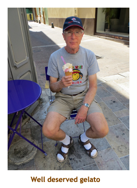
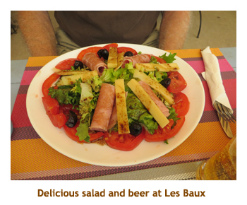
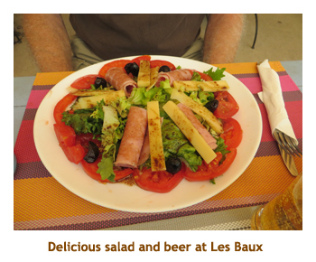
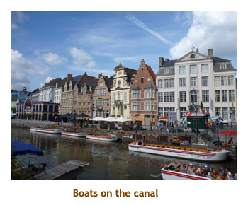

[ Home ] [ Travel ] [ Photography ] [ Pets ] [ Games] [ Rowing] [ Physics ]


A week in Avignon / Brussels
Brussels (5 days - Brussels, Antwerp, Bruges, Ghent, Luxembourg City, Bastogne)
Travel
Cruises
Past Cruises (Diaries)
Future Cruises
Rogues Galleries
Land Trips
Diaries (Land Trips)
Hawai'i - Big Island - 04'01
Hawai'i - Maui - 05'02
Hawai'i - Big Island - 04'03
Hawai'i - Kaua'i - 09'04
Hawai'i - Big Island - 04'06
Hawai'i - Maui - 04'06
Mainland China - 05'07
Phoenix, Arizona - 12'07
Greek Isles - 05'08
Hawai'i - Kaua'i - 09'08
Hawai'i - Big Island - 09'09
Hawai'i - Maui - 05'12
Hawai'i - Big Island - 04'13
Ireland - 08'13
Mexico - Cancun 11'13
France/Belgium/Lux 07'15
Hawai'i - Big Island - 05'17
England / Wales - 06'17
Hawai'i - Big Island - 09'19
Photography
Cameras
Underwater
Pets
Tara
Blackie
Whitey
Muffy
Ollie
Rusty
Fluffy
Rufus&Dufus
Games
Rowing
Physics
When we were looking at back-to-back river cruises, we ended up with a 7 day gap between the cruises. Hence, we put together a week long land tour to fill in the week. We wanted to see around Provence and decided that staying on in Avignon was the best way to do that. We also had never been to Belgium or Luxembourg and discovered that Brussels was central to that whole area. So that meant booking hotels in Avignon and Brussels, booking day tours to see the area and booking trains and planes to transfer between locations. A lot of work compared to booking a cruise!
Anyway, Marjorie pulled it all together and things went quite smoothly. The only difficult task was finding a decent hotel in Avignon. It turned out that we were there during the annual arts festival - the largest festival in France! This meant there was very little in the way of available rooms and prices were at least doubled. Hence this was the most expensive of all of our hotels, and also the crappiest by a mile.
This diary documents just the week between the cruises. See the separate diaries for the preceding cruise Lyon through Avignon, and the following cruise Prague through Luxembourg.
Day 1 (July 19) - Orange and Chateauneuf-du-Pape
 The minivan showed up just after 2:00. There would be 8 of us. A nice size for a tour. We drove through Avignon to pick up the other folks and then headed north to Orange. Just as we entered the town we stopped at a Roman triumphal arch. It was built during the reign of Augustus (27 BC - AD 14). Then we headed into the old town for a walking tour. We ended up at the Roman amphitheatre where our guide purchased tickets for the theatre and a museum. Then we were given two hours or so to meander through the theatre and the museum. We did the theatre first. The Theatre Antique d'Orange ("Ancient Theatre of Orange") is an ancient Roman theatre in Orange, France, built early in the 1st century AD. It is owned by the municipality of Orange and is the home of the summer opera festival, the Choregies d'Orange. We had audio boxes that explained all of the points of interest. The Theatre d'Orange is one of a few Roman theatres which still retains the Scaenae frons, its rear wall. Afterwards we crossed the street to the historical museum and wandered through the displays. Once again we were given audio voxes to listen to the description of the museum items. It was really hot out, so we spent the last of our free time at a nearby gelato shop.
We walked to the minivan, climbed aboard and headed off for Chateauneuf-du-Pape. Its confusing in that there are two Chateauneuf-du-Papes - one is a small village and the other is an appellation (or wine growing region). We were aiming for the appellation. As we drove through miles of vinyards, we stopped to get out to see the grape bushes up close. The soil was non-existent - it was just rocks! The bushes seemed to be thriving though, with lots of grapes. We finally stopped at a winery, the name of which I failed to write down. There we had a tasting of several red wines of the area. They had an interesting wine store with lots of lavender products as well as wine stuff. Then it was time to take us back to Avignon. We were back at our hotel by 6:45. We had noticed a pizza restaurant at a neighbouring hotel so decided to give it a try. It was very good. We wandered around a bit then went to bed. The air conditioning was ineffective and we enjoyed a hot night.
 |
Day 2 (July 20) - The best of Provence

|
 
We reboarded the bus and drove south east to Les Baux-de-Provence. Along
the way we passed vinyard after vinyard. This small tourist
village (pop. 450) is set on a hilltop in the midst of a small national park. We parked
just outside the town and walked up a hill and into the walled village. At the entrance
to the village there was a lookout over the rocky hillsides of bauxite, which was the
original reason for the growth of the village. We were given
an hour or so to wander around the village on our own. Early on our walk we
chanced upon a small outdoor restaurant, so we had lunch. I had a "salade Gallios"
and a local beer. Delightful! We continued around the narrow streets lined
with ceramic shops, restaurants and other tourist shops. Our time was soon up and
we headed back to Avignon. Soon after leaving Les Baux, we stopped at a Roman
town (Glanum) for a photo of a mausoleum and triumphal arch.

We reboarded the bus and drove south east to Les Baux-de-Provence. Along
the way we passed vinyard after vinyard. This small tourist
village (pop. 450) is set on a hilltop in the midst of a small national park. We parked
just outside the town and walked up a hill and into the walled village. At the entrance
to the village there was a lookout over the rocky hillsides of bauxite, which was the
original reason for the growth of the village. We were given
an hour or so to wander around the village on our own. Early on our walk we
chanced upon a small outdoor restaurant, so we had lunch. I had a "salade Gallios"
and a local beer. Delightful! We continued around the narrow streets lined
with ceramic shops, restaurants and other tourist shops. Our time was soon up and
we headed back to Avignon. Soon after leaving Les Baux, we stopped at a Roman
town (Glanum) for a photo of a mausoleum and triumphal arch.
We were back in Avignon about 2:00 to drop off a couple of morning "half dayers" and pick up a couple more for the afternoon. Our first destination for the afternoon was the lavender museum in Coustellet, but when we got there the parking was full of cars and buses. It was packed. So, our guide decided that we would return after the rest of our tour and it might not be so busy. Instead we made for the hilltop village of Roussillon. What makes Roussillon unique among hilltop villages is the surrounding ochre cliffs. The ochre comes in reds, yellows and browns, and the buildings are stuccoed with ochre coloured dirt. This gives a reddish tint to the village (from a distance). Some of the streets were really steep, but we toughed it out in the heat and made it to the highest point of the village where there were excellent views of the surrounding countryside. Our free time was ending so we headed back down to the village entrance to wait for the minivan. There was a grocery store right near the pickup point, so we bought some drinks and a local beer. Then it was onto the minivan and off to our next destination. It was about 3:30.
Our next destination was another mountaintop village - Gordes. In contrast to Roussillon, there is no ochre around, so the colour scheme was grey limestone. As we approached the village we stopped at a viewpoint that offered a great view of the village. We stopped for some photos. Once again we were dropped off at the entrance to the village and given about an hour to wander around. The streets were extremely steep and were a challenge to go up! We did a few of the steep slopes but tried to stick to the encircling streets that were relatively flat. It was still very hot out, so the shaded streets were really pleasant. There was an interesting castle (Le Chateau de Gordes) but we didn't go inside. When our time was up, we headed back to the parking lot where the van had let us out. It was about 5:00 PM.
Our final destination was the lavender museum in Coustellet. Along the way we passed lots of lavender fields, but there was no colour because the lavender had all been harvested. It is usually harvested in mid-July, but this year was so hot so early that the lavender was harvested a couple of weeks earlier. We arrived in Coustellet about 5:30 and had an hour to tour through the museum (with a Vox box) and then browse the gift shop. Marjorie bought some lavender soap. Then it was 6:30 and time to drive back to Avignon. We asked to be dropped off at the Carrefour near our hotel. It was still open at 7:00 so we bought some snacks for tomorrow's breakfast. Walking back we stopped at MacDonald's for a quick bite. It was 7:30 by now. Then it was home for some reading and then to bed. It had been a long day and we had covered many miles, but the sights were really awesome. Great day!
Day 3 (July 21) - Taking the TGV to Brussels

We arrived at Brussels Midi station about 4:00 PM. We had to ask directions to get tickets for our next leg and to find the tram we needed. There were no escalators to get down to the tram level, so had to navigate down two flights of stairs with our luggage. Not fun! However, we made it in one piece. From Midi, we took the tram to Debrouke Place and our hotel (the Metropole) was right next door. How convenient! The hotel was gorgeous. We checked in, unpacked our clothes and then went on an orientation walk to familiarize ourselves with our surroundings. We were very close to the tourist area, including the Grand Place, a huge town square lined with amazing heritage buildings. There was a nearby street rimmed with restaurants so we randomly picked Leons. I had rack of lamb which was delicious. Back on our feet, it was so nice to be walking in a cool temperature. We located Brussels City Tours (BCT) where we would be originating tours from for the next 3 days. Then it was back to the hotel to read and veg prior to another busy day.
Note: According to a city map, our hotel was at least a 20 to
30 minute walk from Brussels City Tours (BCT) which was on Gras Markt
street. I wrote to BCT and they said it was only 5 minutes to walk it. It
turned out to be about 7 minutes. The problem was that all of Brussels streets
are named in both French and Dutch. On the map both street names are printed,
but in the case of a long street, a long ways apart. I didn't realize that
Gras Markt (herb market street, a long way from the hotel) was the
same street as Rue du Marche aux Herbs (herb market street, close
to the hotel). Lesson learned.
Day 4 (July 22) - Touring Brussels and Antwerp
From here we drove to sights in the outskirts of Brussels. We drove past the palace / residence of the current monarch of Belgium. Then we stopped at the "Atomium" for some photos. It was built for the 1958 World's Fair, but is now a science museum. The "atoms" each house museum rooms, restaurants, etc, while the "bonds" house interconecting escalators. We thought of coming back on the Ho-Ho another day to see through the museum, but we never did. The "mini-Europe" park was also nearby, but likewise we never did visit it. Next we stopped at the Basilique Nationale du Sacre Coeur (a church). We wandered through the beautiful church and then took an elevator (2 actually) to a walkway around the main dome. The view from the top was amazing. Then we drove through the European Union business area with all the famous EU HQ buildings. Finally we were back to the starting place where we disembarked from our bus at 12:45. Our afternoon tour started at 1:00, so we ran across the street to Wings for a sandwich and Coke. We were back to the bus stop in time for the next tour. We were off to Antwerp.
It was about an hour drive to Antwerp. When we got there the weather had changed - it was overcast. Not great for photos. We started our walking tour and our first stop was at a diamond shop. We had a tour of the facility and then a lecture on cutting diamonds. It was essentially the same talk we had in Amsterdam several cruises ago. The interesting fact was that more diamonds flowed through Antwerp than through Amsterdam (or so we were told). We were there quite a while because someone in our group wanted to buy something, hence we stood around for a while. Finally we set off to the harbour museum building. It was a modern design and we took escalators up to the 8th floor which was an observation deck. Great views of the city! The museum was housed in the core of the building (7 stories) while the escalators wrapped around the outside walls. We didn't have time to do any of the museum. Then we walked through the main city square with the city hall and other interesting buildings. We walked along the river front and then back to the bus. By the time we were back in Brussels it was 7:00 PM. We walked to the Ricotta & Parmesan for pizza. We were back to our hotel by 8:30, read for a bit then had an early night.
Day 5 (July 23) - Tour of Ghent and Bruges
|  |
When our free time was up, we climbed aboard the bus and headed off to Bruges about another hour away. At this point we were almost to the western edge of Belgium. Whereas we had had some sun in Ghent, Bruges was straight overcast and grey. Once again we were let off at the entrance to the old town. As we walked through the 19th century area, it felt kind of artificial, like an open air museum. We were given some free time for lunch as it was about 2:00 by now. We tried Vivaldi's Restaurant and I had a very good schnitzel. Afterwards we walked to the canal area and the architecture was back to the same style as in Amsterdam and Ghent. We did some more guided walking and ended up at a canal boat loading zone. We piled ito the boat and had about an hour tour sailing up and down the canals. What a wonderful view of the buildings. Then it was back to the bus for our 2 hour ride back to Brussels. When we arrived back in Brussels, we got the driver to drop us off at the Carrefour store so we could buy some breakfast snacks and drinks. It was about 20 minutes to walk to our hotel and we arrived there at 7:30. Phew, a long day! We had left over pizza for dinner, read for a while and then crashed.
Day 6 (July 24) - To Luxembourg and Bastogne
 |
|||
We circled around the restaurant area of town, but ended up at MacDonald's for a burger. Force of habit? Afterwards we wandered around the public square where buskers were entertaining the crowds. One interesting performance was 5 girls in yellow dresses playing zithers. Unique! When our time was up we reboarded the bus and headed back towards Brussels, but on a different highway. About an hour out from Luxembourg, we arrived at Bastogne, made famous by the Battle of the Bulge in WW-II. We stopped at a huge US military memorial. It was about 5:30. We walked around the memorial which had the names of thousands of soldiers who were killed here. Very moving. We were given time on our own to explore the little town. We discovered a Carrefour and bought some snacks and juice. We had a two hour drive back to Brussels, arriving at our hotel about 8:00. We skipped dinner, read for a while and then went to bed. Another long day.
Day 7(July 25) - A day loafing in Brussels
 At last! Our first relax day with nothing planned! We were up at 7:30. It was a cool 18 degrees
and drizzled most of the day. We headed out early with our laundry, looking for a laundramat.
We found one, and after some help from the locals, managed to get the washing spinning.
We popped down the road to have brunch at the Flamingo, and got back just in time to move
the clothes into the dryer.When all was done we hiked back to the hotel. The afternoon was
mostly dry so we walked around the Grand Place square. We also walked to the Brussels
Central train station to check out the logistics of getting to the airport (for tomorrow). As we
walked back to the hotel, it rained fairly hard. We had dinner at the Brussels grill, right next
to our hotel. I had a beef / chicken / lamb combo. Excellent! We did another walk around the
town square, then headed back to the hotel to read and sleep.
At last! Our first relax day with nothing planned! We were up at 7:30. It was a cool 18 degrees
and drizzled most of the day. We headed out early with our laundry, looking for a laundramat.
We found one, and after some help from the locals, managed to get the washing spinning.
We popped down the road to have brunch at the Flamingo, and got back just in time to move
the clothes into the dryer.When all was done we hiked back to the hotel. The afternoon was
mostly dry so we walked around the Grand Place square. We also walked to the Brussels
Central train station to check out the logistics of getting to the airport (for tomorrow). As we
walked back to the hotel, it rained fairly hard. We had dinner at the Brussels grill, right next
to our hotel. I had a beef / chicken / lamb combo. Excellent! We did another walk around the
town square, then headed back to the hotel to read and sleep.
Day 8 (July 18) - A final day in Brussels

Nearby the palace was a musical instrument
museum. Marjorie stayed in the entrance lobby to rest, but I
decided to go through the museum. It was very interesting,
with lots of old European instruments plus strange instruments from cultures all over the world. Each
guest was given a wireless Vox box that played samples of music for the instrument you were
standing closest to. Amazing! We walked back to the hotel (by 3:00) and had
lunch / dinner at the Brussels
Grill (again). We picked up our luggage at about 5:00 PM. Of course it was cool and raining by this time.
We trudged through the puddles to Brussels Central station and bought our train tickets to the
airport. The train was almost empty which made it easy to store our luggage. We said goodbye to
Brussels and started the third and final leg of our trip.
Here endith the diary of our Avignon/Brussels land trip. You can read about the rest of our trip
in the diaries covering the preceding cruise from
Lyon to Avignon,
and the following cruise from
Prague to Luxembourg.